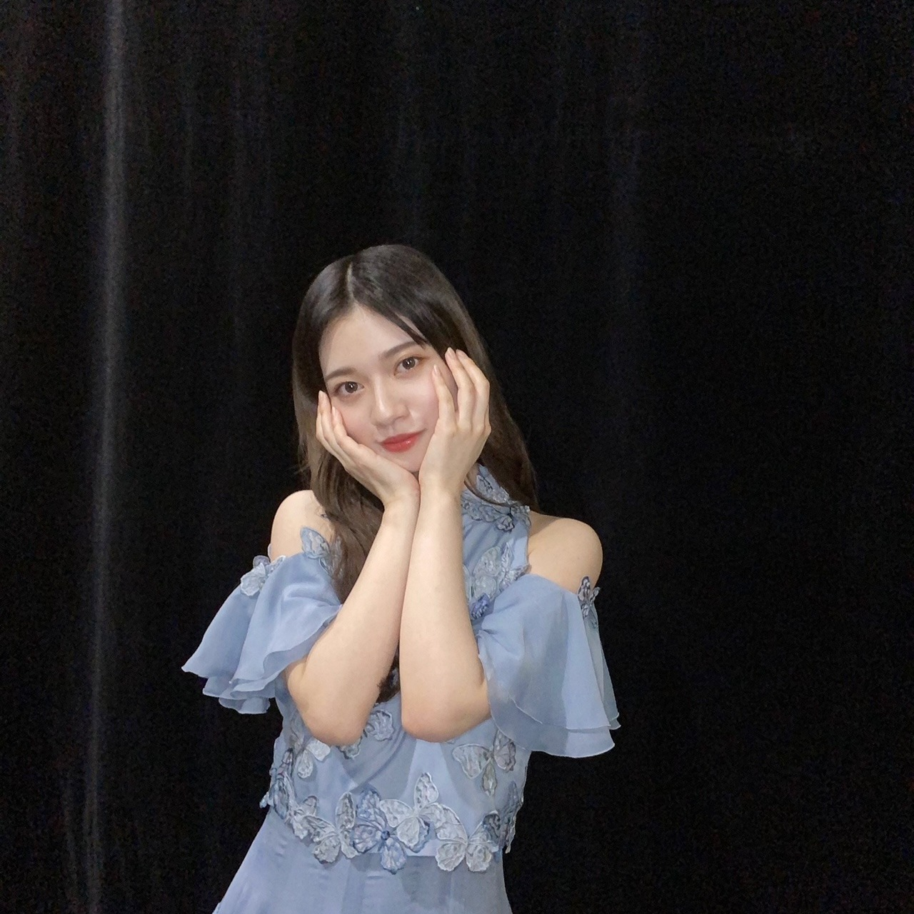

2020/1220Sun横顔
書き溜めたブログも何個かあるのですが
確認したり、写真を考えていたら
時系列ばらばらになり、、、
最近は本当にばたばたばたばたバタバタ、、、
有難いことに
そして、本日。
健康と安全第一です。
宜しくお願い致します。
自分としてはもう沢山ライブを経験して
色んな大きさの会場に立たせてもらい
色んなポジションを経験して
色んな新しい挑戦をしてきました。
だからこそ、
冷静に丁寧に正確に
生きます。✨
とにかく、声は無くても配信でも応援は届いてます。✨
なので、怪我などありませんようにと
願って応援しててください。✨
私も皆さんの事日々応援してます。✨
いってきます。✨


モノクロとカラーで。
2020/12/20 11:30
コメント(554)
今日、アンダラ見に行きます！
全アンダー今日ノンストップ披露ということで楽しみです！
頑張ってください！
全アンダー今日ノンストップ披露ということで楽しみです！
頑張ってください！
ライブ最終日頑張ってね！
最後はいけないけど二日目行けて最高だった！
やっぱ蘭世最高！
滑走路大好き
最後はいけないけど二日目行けて最高だった！
やっぱ蘭世最高！
滑走路大好き
ブログありがとう！
そして今日を無事で終えられますように(^^)
もちろん現場行きます。全力で応援しますね。
そして今日を無事で終えられますように(^^)
もちろん現場行きます。全力で応援しますね。
アンダーライブ頑張ってください！！
次世代を支えていく二期生の姿この目に焼き付けておきます！！いってらっしゃい！！
次世代を支えていく二期生の姿この目に焼き付けておきます！！いってらっしゃい！！
ブログの更新ありがとう☺︎
アンダーライブ3日目だね！
疲れてると思うけれど、
最高のライブ期待してるね！
今後のブログも楽しみに待ってます！
体調には気をつけてね！
応援してます！
大好きです♡
全力でライブ楽しんでね！
頑張れ〜！！
アンダーライブ3日目だね！
疲れてると思うけれど、
最高のライブ期待してるね！
今後のブログも楽しみに待ってます！
体調には気をつけてね！
応援してます！
大好きです♡
全力でライブ楽しんでね！
頑張れ〜！！
かわいい
ライブ引き続き頑張ってください！
応援してます！
ライブ引き続き頑張ってください！
応援してます！
頑張ってくれな(つ≧▽≦)つ
こんにちは、らんぜ(^^)
おつかれさまです！
メールありがとう(^^)/
ブログ楽しみにしてますね♪
こんな忙しいときに、らんぜブログを書いてたのね！すんごいです、、、本当、おつかれさまです^^;
お祭りになればいいのですね！わかりました、らんぜブログ更新を発見したらお祭りしますね！！ポンポンっ！！
昨夜のアフター配信のときに、らんぜが絢音さんからもらったプレゼント、すごく素敵だったじゃないですか〜どう、らんぜはサンタさんいると思いますか！？
今ね、季節がらサンタさんみたいなカッコをした人はいっぱいいますね。じゃ、ホントのサンタさんは、、、？ねえ、、これはすごく哲学的な問題だ、、、絢音さんはどう考えてるのかな、、、らんぜも贈られたあの本を読んでみて、いつかポロッと感想を聞かせてくださいね(^^)
もう1つすごくオシャレで素敵なものも入ってましたね！アーティスティックで可愛らしさもあるものでしたね。絢音さんのセンスを感じますね(^^)珍しいと思います。素敵な人ですね。あれはらんぜも好きそうだなって、見てて思ったよ！インスタにらんぜがどんなふうに映えるようにアップしてくれるのか楽しみにしてます(^^)
らんぜあの場で公約してしまったからね^^;
ちょっとプレッシャーだね、、、
今日、全曲ノンストップですか、、、
もうすでに昨日の段階で私はあのメンバー、このメンバーを、曲を聴いて、思い出してしまって、色んな想いにかられています。思い出したくなかったような感情も掘り起こされました。もちろん、何かを好きだった暖かい気持ちもね。
本当に今回のライブは難しいね、すごくフクザツな気持ちになる、、、観るほうがこれなんだから、らんぜたちは、らんぜは、もっと大変なんじゃないかな！？きっとそうだと思うんだけどな、、、
今日も、画面の向こうで熱く応援！あたたかく見守り、らんぜにむかって心からの声援と、赤と白の光を送ってますから。
光がらんぜをつつみますように。
いっぱいいっぱいの溢れる気持ちで、精一杯応援しています。らんぜを。
はっ！赤と白って、、、サンタさんじゃん！らんぜはサンタさんカラーじゃん！！
サンタさんはいた！ここにいた！
らんぜサンタさん(^^)
ごきげんよう、らんぜ。 ごぶうんを。
また書きますね(^^)/〜
おつかれさまです！
メールありがとう(^^)/
ブログ楽しみにしてますね♪
こんな忙しいときに、らんぜブログを書いてたのね！すんごいです、、、本当、おつかれさまです^^;
お祭りになればいいのですね！わかりました、らんぜブログ更新を発見したらお祭りしますね！！ポンポンっ！！
昨夜のアフター配信のときに、らんぜが絢音さんからもらったプレゼント、すごく素敵だったじゃないですか〜どう、らんぜはサンタさんいると思いますか！？
今ね、季節がらサンタさんみたいなカッコをした人はいっぱいいますね。じゃ、ホントのサンタさんは、、、？ねえ、、これはすごく哲学的な問題だ、、、絢音さんはどう考えてるのかな、、、らんぜも贈られたあの本を読んでみて、いつかポロッと感想を聞かせてくださいね(^^)
もう1つすごくオシャレで素敵なものも入ってましたね！アーティスティックで可愛らしさもあるものでしたね。絢音さんのセンスを感じますね(^^)珍しいと思います。素敵な人ですね。あれはらんぜも好きそうだなって、見てて思ったよ！インスタにらんぜがどんなふうに映えるようにアップしてくれるのか楽しみにしてます(^^)
らんぜあの場で公約してしまったからね^^;
ちょっとプレッシャーだね、、、
今日、全曲ノンストップですか、、、
もうすでに昨日の段階で私はあのメンバー、このメンバーを、曲を聴いて、思い出してしまって、色んな想いにかられています。思い出したくなかったような感情も掘り起こされました。もちろん、何かを好きだった暖かい気持ちもね。
本当に今回のライブは難しいね、すごくフクザツな気持ちになる、、、観るほうがこれなんだから、らんぜたちは、らんぜは、もっと大変なんじゃないかな！？きっとそうだと思うんだけどな、、、
今日も、画面の向こうで熱く応援！あたたかく見守り、らんぜにむかって心からの声援と、赤と白の光を送ってますから。
光がらんぜをつつみますように。
いっぱいいっぱいの溢れる気持ちで、精一杯応援しています。らんぜを。
はっ！赤と白って、、、サンタさんじゃん！らんぜはサンタさんカラーじゃん！！
サンタさんはいた！ここにいた！
らんぜサンタさん(^^)
ごきげんよう、らんぜ。 ごぶうんを。
また書きますね(^^)/〜
アンダーライブ最終日ですね！
現地では応援できませんが
山口県から応援しています！
楽しみだな！
現地では応援できませんが
山口県から応援しています！
楽しみだな！
ライブお疲れ様です！
蘭世ー！ブログ更新ありがとう！
アンダラ最終日ですね！
残念ながら見には行けませんが、配信で参加します！
会うことが出来なくても遠くから応援してますね！！
蘭世の色々な姿を目に焼き付けたいと思います！
最後まで体調には気をつけて頑張ってください！
ずっと応援してます
ちょっとした名言集
夢とは幻ではなく、可能性のことだ。人間には、何歳になってもいろいろな可能性が残されているのだと思う。その可能性を信じるべきだ
by三浦雄一郎
アンダラ最終日ですね！
残念ながら見には行けませんが、配信で参加します！
会うことが出来なくても遠くから応援してますね！！
蘭世の色々な姿を目に焼き付けたいと思います！
最後まで体調には気をつけて頑張ってください！
ずっと応援してます
ちょっとした名言集
夢とは幻ではなく、可能性のことだ。人間には、何歳になってもいろいろな可能性が残されているのだと思う。その可能性を信じるべきだ
by三浦雄一郎
小さい蘭世が大きく見える。
その背中を後輩たちは、
見ながら後ろをついて行っているんだな。
その背中を後輩たちは、
見ながら後ろをついて行っているんだな。
無理せず楽しんでね～
蘭世ブログ更新ありがとう。
久々のアンダラ最高です！
自分は初日は武道館で2日目は配信でばっちり見ました！
現地では赤白一生懸命振っていました。
気づいてくれていたら嬉しいです。
最終日も配信ではありますが一生懸命応援します！
全曲披露大変と思いますがアンダラ、そして蘭世の凄さを見せてください！楽しみにしてます！
そして何よりも健康には気をつけて。
久々のアンダラ最高です！
自分は初日は武道館で2日目は配信でばっちり見ました！
現地では赤白一生懸命振っていました。
気づいてくれていたら嬉しいです。
最終日も配信ではありますが一生懸命応援します！
全曲披露大変と思いますがアンダラ、そして蘭世の凄さを見せてください！楽しみにしてます！
そして何よりも健康には気をつけて。
蘭世ちゃんこんにちは、ブログ更新ありがとう☀
今日はアンダーライブ最終日ですね
私は今日、武道館に参戦予定です！
昨日、蘭世ちゃんがケータリングかな？
持って走り去る動画がtwitterにアップされてたね
振り返った時とか、行動の一つひとつが天使すぎて
癒されましたーー◎✨
今日も蘭世ちゃんが怪我など無く、
無事にライブを完走できますように！✨
ライブ楽しみです！がんばってください✨
さっこ
今日はアンダーライブ最終日ですね
私は今日、武道館に参戦予定です！
昨日、蘭世ちゃんがケータリングかな？
持って走り去る動画がtwitterにアップされてたね
振り返った時とか、行動の一つひとつが天使すぎて
癒されましたーー◎✨
今日も蘭世ちゃんが怪我など無く、
無事にライブを完走できますように！✨
ライブ楽しみです！がんばってください✨
さっこ
蘭世ブログ更新ありがと！配信ライブ観たよ！金曜日は仕事で見れなかったけど土曜日はしっかり観ました！
現地には行けないけど配信を見て一生懸命応援してます
ラスト一日頑張って！！年末忙しくて大変だと思うけど体調管理をしっかりしてがんばろー！
蘭世、お疲れ様。
昨日のアンダラ配信だけど観させてもらいました。
配信専用のライブと違って有観客のライブだったから、また違った雰囲気で、やっとライブ再開できたんだなと思いました。
蘭世のパフォーマンス凄く良かったし、サンタコスも似合ってて可愛かったよ。
今日の千穐楽も楽しみにしてるね。
昨日のアンダラ配信だけど観させてもらいました。
配信専用のライブと違って有観客のライブだったから、また違った雰囲気で、やっとライブ再開できたんだなと思いました。
蘭世のパフォーマンス凄く良かったし、サンタコスも似合ってて可愛かったよ。
今日の千穐楽も楽しみにしてるね。
あなたの努力は皆んなに届いています、皆んな知っています
あなたが頑張るから、私達も頑張れる
あなたが頑張るから、私達も頑張れる
お疲れ様です。ブログ更新ありがとう！
アンダーライブが無事開催することができて嬉しい！2年前の武蔵野の森で人生初めてライブを観てアンダラの良さを知ってそこから毎会場行ってるよ:-)
2日目は配信で観てたけど蘭世さん推しにはたまらないセトリだったね！
唯一チケットが取れた今日、アンダー曲30曲ノンストップということでテンションが上がってる！声は出せないけどうちわとタオル持って応援するね！
あと、センターのたまちゃんも支えてあげてください(^^) 体調には気をつけて最終日も楽しんでね！
えいえいおーー！
アンダーライブが無事開催することができて嬉しい！2年前の武蔵野の森で人生初めてライブを観てアンダラの良さを知ってそこから毎会場行ってるよ:-)
2日目は配信で観てたけど蘭世さん推しにはたまらないセトリだったね！
唯一チケットが取れた今日、アンダー曲30曲ノンストップということでテンションが上がってる！声は出せないけどうちわとタオル持って応援するね！
あと、センターのたまちゃんも支えてあげてください(^^) 体調には気をつけて最終日も楽しんでね！
えいえいおーー！
俺も蘭世のこと日々応援しています!
だから今日もライブ頑張ってね!
ほんと怪我ないように、体調に気おつけて
最終日、30曲歌いきってくださーい
コロナがなかったら会場で超絶かわいい蘭世!!
なんてコールして推しメンタオル振り上げて
サイリウム、赤と白を振り回すんだけど…
今回は家で家族の目もあるので小声でコールして盛り上がりたいと思いまーす
蘭世頑張れ！
だから今日もライブ頑張ってね!
ほんと怪我ないように、体調に気おつけて
最終日、30曲歌いきってくださーい
コロナがなかったら会場で超絶かわいい蘭世!!
なんてコールして推しメンタオル振り上げて
サイリウム、赤と白を振り回すんだけど…
今回は家で家族の目もあるので小声でコールして盛り上がりたいと思いまーす
蘭世頑張れ！
最終日、今日も楽しみます
蘭世ブログ更新ありがとう！
今日はアンダラ最終日だね！
久しぶりにライブ会場から、応援できるから、ワクワクしてる！
めっちゃバルーン叩いて応援します！
今日はアンダラ最終日だね！
久しぶりにライブ会場から、応援できるから、ワクワクしてる！
めっちゃバルーン叩いて応援します！
ブログありがとうございます。
配信ですが、ライブ拝見させてもらってます。
画面越しですが、みなさんのパフォーマンスを見ることで元気や勇気をたくさん貰えました。
本日も無事開催され、怪我もなく最高のライブになりますように応援します。
全力で楽しみます！
配信ですが、ライブ拝見させてもらってます。
画面越しですが、みなさんのパフォーマンスを見ることで元気や勇気をたくさん貰えました。
本日も無事開催され、怪我もなく最高のライブになりますように応援します。
全力で楽しみます！
頑張ってね！♡
頑張ってください！
楽しみにしてます！
楽しみにしてます！
おでこだしたセンターパート
の蘭世さんが一番好きです。
アイメイクもステキですね。
すごくかわいい。
今日はライブの最終日。
乃木坂46の皆様がお怪我
などなく無事にライブを
終えられますように。
その事を祈っております。
お忙しい日々はライブ後
も続くと思いますが
またこちらで様々なヘアアレンジ
やメイクをした蘭世さんを見せて
ください。
少し早いですが
ステキなクリスマスをお過ごしください。
の蘭世さんが一番好きです。
アイメイクもステキですね。
すごくかわいい。
今日はライブの最終日。
乃木坂46の皆様がお怪我
などなく無事にライブを
終えられますように。
その事を祈っております。
お忙しい日々はライブ後
も続くと思いますが
またこちらで様々なヘアアレンジ
やメイクをした蘭世さんを見せて
ください。
少し早いですが
ステキなクリスマスをお過ごしください。
いつも応援できる存在がいることが、何よりも有難いです。
これからもお互い支え合っていきましょうね！！
最終日も無事に成功しますように。顔晴れーー！！
これからもお互い支え合っていきましょうね！！
最終日も無事に成功しますように。顔晴れーー！！
蘭世さんブログ更新ありがとうございます！
最近はアンダラや年末年始のイベントでバタバタしてますね
僕は、アンダラを現地でも配信でも見ることが出来なくてめちゃくちゃ悔しいけど
Twitterや知り合いを見ていると、すごく盛り上がってるのがよく分かるし
とてもいいライブなんだろうなって思います
これが「本物の乃木坂」だと、僕は思うから
最終日も絶対に成功させて欲しいです
悔いなく、最後まで、全力で、怪我なく、コロナもなく無事に
ライブを成功させることを遠くから願ってます
大好きです。
ユウキ
最近はアンダラや年末年始のイベントでバタバタしてますね
僕は、アンダラを現地でも配信でも見ることが出来なくてめちゃくちゃ悔しいけど
Twitterや知り合いを見ていると、すごく盛り上がってるのがよく分かるし
とてもいいライブなんだろうなって思います
これが「本物の乃木坂」だと、僕は思うから
最終日も絶対に成功させて欲しいです
悔いなく、最後まで、全力で、怪我なく、コロナもなく無事に
ライブを成功させることを遠くから願ってます
大好きです。
ユウキ
最終日、頑張って行きましょう！
会場で応援します！
会場で応援します！
うーん
やっぱり蘭世は可愛くて好きだ（＾ν＾）
やっぱり蘭世は可愛くて好きだ（＾ν＾）
アンダラ最終日頑張れ！
最終日頑張ってください！
昨日は現場でライブを観ることができたのですごく楽しかったです。
昨日は現場でライブを観ることができたのですごく楽しかったです。
ブログ更新ありがとう
蘭世ちゃんアンダラ２日目楽しかったよ(^-^)
今日ライブも配信で見るね
これからもずっとずっと応援してます
蘭世ちゃんアンダラ２日目楽しかったよ(^-^)
今日ライブも配信で見るね
これからもずっとずっと応援してます
蘭世ちゃん、キレイ！ 毎日頑張ってる蘭世ちゃん。私の元気は蘭世ちゃんのおかげ！ お身体にお気をつけて頑張ってね！
( •̀ω •́ゞ)✧ﾋﾞｼｯ!!
( •̀ω •́ゞ)✧ﾋﾞｼｯ!!
いざ！！！
蘭世の想いは十分に伝わってるから。。
最善の事をし全力で受け止めるから、おもいっきり楽しんで、おもいっきりパフォーマンスしてね！
さぁ！！ いざ参りましょう！！
ブログ更新ありがとう。お疲れ様です。
アンダラ2日目もお疲れ様でした。配信でしたが、可愛い蘭世ちゃんも格好いい蘭世ちゃんも観れて幸せでした。
配信だから滑走路での「蘭世のことは好きですか？」には「大好きぃーー！！」って大声で答えてます(笑)
今日は最終日。怪我なく、コロナにも負けず乗り切って下さいね。
アンダラ2日目もお疲れ様でした。配信でしたが、可愛い蘭世ちゃんも格好いい蘭世ちゃんも観れて幸せでした。
配信だから滑走路での「蘭世のことは好きですか？」には「大好きぃーー！！」って大声で答えてます(笑)
今日は最終日。怪我なく、コロナにも負けず乗り切って下さいね。
忙しいのはいいことだけど
体には気をつけてね！！
今日のアンダラは配信で参加します！
体には気をつけてね！！
今日のアンダラは配信で参加します！
蘭世さんこんにちは
今武道館に向かっています
本当に今日が楽しみで楽しみで
多分今年一番の思い出になりそう
今日は声は出せないけど
全力で蘭世さんを応援します！
ではまた会場で！
(こ・っ・ぺ)
今武道館に向かっています
本当に今日が楽しみで楽しみで
多分今年一番の思い出になりそう
今日は声は出せないけど
全力で蘭世さんを応援します！
ではまた会場で！
(こ・っ・ぺ)
蘭世こんにちわ
ブログ更新ありがとう
コメント久しぶりな気がする。
ぜんぜんコメントできてなくてごめんね、、、
アンダラ2日間おつかれさま〜
残り1日頑張ってね！
自分は金曜日は仕事で見れなかったんだけど土曜日は見たよ！
滑走路の時の煽りで蘭世のこと好きってやつ昔やってたの分かってたよ
蘭世可愛すぎた〜
今日も見るから楽しみにしてるね！
今回はこのへんで
またコメント書くね
蘭世の勢いとまらんぜ〜
ブログ更新ありがとう
コメント久しぶりな気がする。
ぜんぜんコメントできてなくてごめんね、、、
アンダラ2日間おつかれさま〜
残り1日頑張ってね！
自分は金曜日は仕事で見れなかったんだけど土曜日は見たよ！
滑走路の時の煽りで蘭世のこと好きってやつ昔やってたの分かってたよ
蘭世可愛すぎた〜
今日も見るから楽しみにしてるね！
今回はこのへんで
またコメント書くね
蘭世の勢いとまらんぜ〜
アンダーライブ初日を配信で見ました。
久しぶりの観客ありのライブで会場の熱さは画面越しでも届いたよ。
会場全体が紫のサイリウムでいっぱいになっているのを見て胸が熱くなりました。
会場で声を出して乃木坂を応援したいな。
今日は全曲ノンストップ、怪我なく、最後まで駆け抜けください！
久しぶりの観客ありのライブで会場の熱さは画面越しでも届いたよ。
会場全体が紫のサイリウムでいっぱいになっているのを見て胸が熱くなりました。
会場で声を出して乃木坂を応援したいな。
今日は全曲ノンストップ、怪我なく、最後まで駆け抜けください！
ありがとう！
配信観ます！
配信観ます！
行ってらっしゃい！
頑張って
頑張って
蘭世さん、こんにちは
忙しいなかブログ更新ありがとう！
昨日は急いで夕食を食べて父娘３人でPC前に集合、アンダーライブ２日目の配信を楽しませてもらいました。
まさに私の好きな乃木坂はここにある！という素晴らしいライブでした。娘たちの言葉を借りれば「アンダーライブしか勝たん！」
ということで今日もPC前に集合します。
何よりメンバーの安全を願いながら…
いつでも応援しています
忙しいなかブログ更新ありがとう！
昨日は急いで夕食を食べて父娘３人でPC前に集合、アンダーライブ２日目の配信を楽しませてもらいました。
まさに私の好きな乃木坂はここにある！という素晴らしいライブでした。娘たちの言葉を借りれば「アンダーライブしか勝たん！」
ということで今日もPC前に集合します。
何よりメンバーの安全を願いながら…
いつでも応援しています
忙しい中ブログ更新ありがとう！初日も見たけど最終日も見るよ！
蘭世センターの滑走路やっぱさ最高で、選抜に選ばれなかったのはもちろん悔しいことだと思うけど、蘭世がアンダーにいてくれて本当に良かったと思いました。配信ですが最終日も全力で応援します、楽しみます！頑張ってね！
蘭世センターの滑走路やっぱさ最高で、選抜に選ばれなかったのはもちろん悔しいことだと思うけど、蘭世がアンダーにいてくれて本当に良かったと思いました。配信ですが最終日も全力で応援します、楽しみます！頑張ってね！
今日参戦します！
よろしくお願いします！！
よろしくお願いします！！
蘭世こんにちは
毎日、配信で応援してるよ
最終日、みんなで楽しみましょう
アンダラ行く人は気をつけて
毎日、配信で応援してるよ
最終日、みんなで楽しみましょう
アンダラ行く人は気をつけて
蘭世！アンダーライブ初日行きました。凄いいいライブでした。声援出来ないのは寂いけど、沢山叩きましたよ！笑笑！千秋楽頑張ってね
声を出せるようになったら沢山名前呼ぶからね！
蘭世ちゃん、 こんにちは！
ここ2、3日録画してた映画を見ているんですけど、途中で寝ちゃう事が度々おきてて苦労してます。
あんぱんマンにバタコさんっているので、ばたバタが続いたオチ的にバタコさんくるかと思ってたんですけど、来なかった！
白黒の写真ってなんか色を想像したりしませんか？なんか補正？補完？みたいな感覚ありませんかね、なので白か黒で答えろという難題をつきつける事なんてとても出来ないです。
ライブ頑張って下さいね。
それでは
ここ2、3日録画してた映画を見ているんですけど、途中で寝ちゃう事が度々おきてて苦労してます。
あんぱんマンにバタコさんっているので、ばたバタが続いたオチ的にバタコさんくるかと思ってたんですけど、来なかった！
白黒の写真ってなんか色を想像したりしませんか？なんか補正？補完？みたいな感覚ありませんかね、なので白か黒で答えろという難題をつきつける事なんてとても出来ないです。
ライブ頑張って下さいね。
それでは


らんらんに悔いが残らないように全部出し切ってパフォーマンスしてね(^^)
私も画面の向こうで応援してます！！！
シンクロの衣装可愛いよねすき！